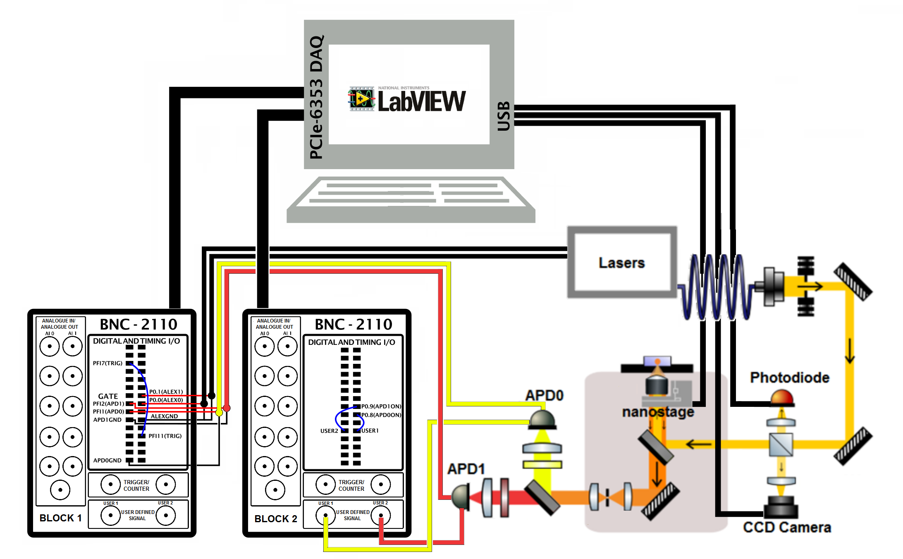

Fig 1: Exploded view of the microscope body.
The box itself is composed of machined anodized aluminium parts.
The technical drawings for the aluminium components can be found on our github Here
Main Assembly and Optical Aligment
Main Microscope Body
The microscope body forms the basis for the sample measurement. It is designed to be as flexible and stable as possible. The construction is based around a modular cube with a central block designed to hold the main optical components.
Parts 53-58 can be assembled and bolted onto this central block of the microscope body as seen in figure below. Part 53 is attached using four screws at its corners and part 58 affixes with a single M6 cap screw. Part 58 fixes the two mounts together to increase rigidity. These parts form the main DM1 (a) and M3 (b) mount. The confocal arrangement is formed of parts 59-63 and mounted on rods (parts 64-65). Insertion of the objective is best done according to the alignment instructions (below). The bushing (part 51) need to be set to the correct height during this process.
Fig 2: Exploded view of the microscope body
Excitation Pathway
The excitation pathway consists of two mirrors giving complete steering into the main cube. It also consists of a camera, which images the backreflection, ensuring the beam is focused in the plane of the sample. A photodiode can also be arranged to check the triggering of the lasr systems.
Parts 1-30 form the optical path for the laser prior to entering the main microscope body. Parts 31-35 form the back-reflection focusing optics. It is important to adjust the length of part 32 to match the focal length of lens d before implementation. This can be done by using a collimated laser beam and minimising the focal spot size. Parts 36-44 form the photodetector system. Parts 45-47 attach the arrangement to the main cube.
Fig 3: Exploded view of the excitation pathway
Once the main cube body is attached the optical table the scope can be simultaneously be built and aligned in about two days work.
1. Once the main excitation pathway: M1, M2 and BS1 have been mounted they should be connected with 3 of the 4 cage rods and without the lens tubes attached. The initial alignment can be done by aiming the beam to the centre of the DM1 mount port, using a target on one of the dichroic cube’s mount caps. A handy trick to give fine alignment is to rotate DM1 to be 90° to the incoming beam and place a mirror directly behind it. This mirror will reflect the bleed-through of the dichroic, creating a cavity. If the beam is flat and correctly aligned coming into the dichroic mount then the reflection of the beam should match the incoming one.
2. Insert the fourth rod and the lens tubes and repeat the above steps to give fine alignment.
3. The microscope body is then aligned without insertion of the objective, nanostage or confocal system (L4, L5 and P1): DM1 should then be aligned at 45° to reflect the beam perpendicular to the plane of the optical table (aiming to be centred on the objective’s aperture when inserted). To check this alignment long rods can be extended from the DM1 mount with the top lid of the microscope body removed. Using a set of frosted glass apertures or a large pin-hole and diffuser the alignment can be tuned as the beam should stay in the centre of the both the apertures at a far distance. Adjustment of the pitch of DM1 should correct for any deviations.
4. Alignment of the confocal system should then be done by inserting a mirror in the position of O1. With the laser power increased the bleed-through should be visible though the dichroic. By using long rods attached to the beam-out port of the microscope body M3 can be aligned to be flat and centred.
5. The confocal lenses, L4 and L5 can then be positioned by checking the beam is collimated at a long distance. This can be done by measuring the beam waist with a camera or through visual inspection and adjusting the position of the lenses relative to each other.
6. The pinhole can then be inserted and aligned by using a power meter to track the maximum transmission.
7. The objective lens can then be inserted and top plate of the box attached. Using a microscope slide with a drop of water the coarse focusing of the objective lense can be found using the methods mentioned in Focusing Software.
8. Using an an appropriate dye (eg. Cy3 or Cy5) the pinhole alignment can then be optimised further using a power meter.
9. If the dye concentration is high enough the excitation pathway can then be coarsely aligned by-eye without the lens bellow attached. For fine alignment, the dye concentration or laser power reduced. The translation stages on the APD lenses (L6 and L7) can then be used with the APD alignment software to get exact alignment.
10. The lens bellows should then be attached, and the system is ready for testing.
Wiring

Fig 4: Wiring diagram for the smfBox to the BNC's and PC.
See above diagram for wiring. You will need to strip the crocodile clips from the RG-58/U Coaxial Male BNC-Hook Up Wires as noted in shopping list